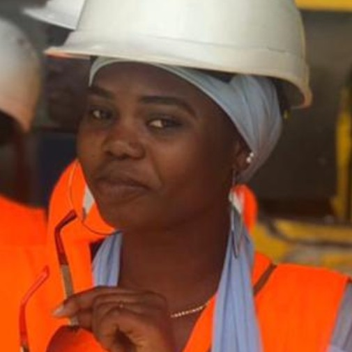

OUMY TOURE Technicien Superieur en Electromecanique
PROFIL
Adresse
fann/claudel
toureoumy12@gmail.com
TELEPHONE
772243771
PERMIS
BCOMPETENCES
Informatique
Word,Excel,autocard,solidwoksLangues
Français,Espagnol(notion),anglais(notion),wolofLOISIRS
EXPERIENCE PROFESSIONELLES
2020-2021:Stage à l'entreprise industriel de Septembre à Décembre maintenance de machines à souder. Soudure des réservoirs de stockage d'hydrocarbure ou bac (bac à eau, bac à essence) avec des machines à souder semi-automatique qui font le soudage horizontal et vertical. 2019-2020:Stage au Centre Hospitalière National d'Enfant Albert Royer(CHNEAR) du 07 Septembre au 07 Novembre 2020 Maintenance des équipements médicaux(Bistouri,centrifuseuse,autoclave, machine à laver, fauteuille dentaire,etc.). Visite et controrle des différentes centrales:centrale de production d'oxygène médicale(CPOM) centrale de production d'air médical(CPAM)et une centrale à vide. 2018-2019:Stage à l'Institut Pasteur de Dakar(IPD) du 01 Aout au 04 Octobre 2019 Mintenance des appareils scientifiques(hott,étuve,Bistouri,centrifuseuse,autoclave, bain marine, mocroscope,distillateur,etc.). Maintenance préventives et corectives des splits Intervention sur les frigos,des chambres froides mais aussi au niveau des installations électriques.
FORMATIONS ET DIPLOMES
2018-2021:Brevet de Technicien Superieur en Electromecanique(BTS/EM) 2017-2018:Licence1 FASEG (UCAD) 2017-2018:1ère année BT Electromecanique(Lycée Technique industriel Maurice Delafosse LTID) 2016-2017:Baccalauréat S2(Collège Privée Franco-Arabe de Diofior) 2010-2011:BFEM(CEM Diofior2)